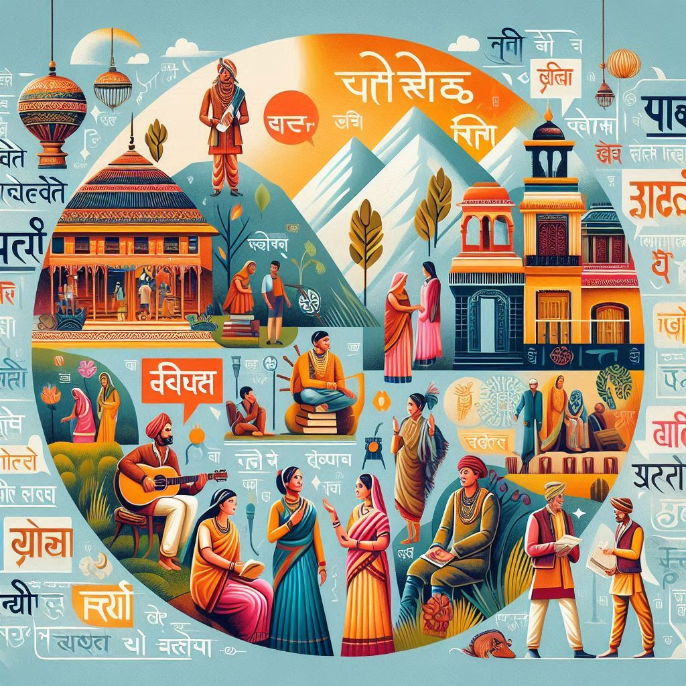
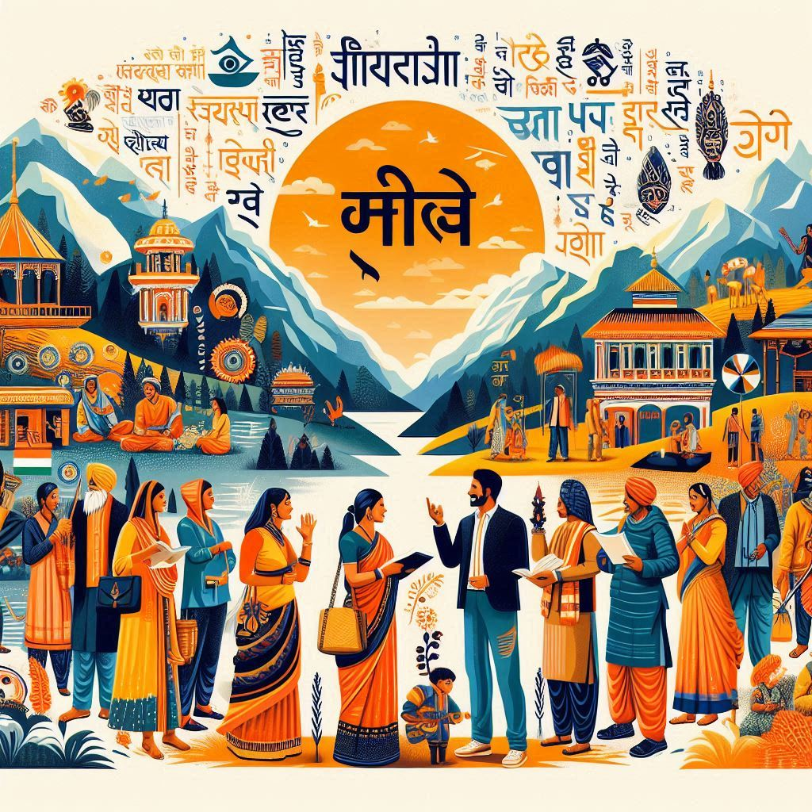

Uttarakhand is a linguistically diverse state with a variety of languages spoken across its regions. Here’s an overview of the languages prevalent in Uttarakhand:
1. Official Language
- Hindi: Hindi is the official language of Uttarakhand and is widely spoken and understood across the state. It is used in government, education, and media.
2. Regional Languages
- Garhwali: Predominantly spoken in the Garhwal region, Garhwali is an important regional language with a rich oral literature. It has several dialects and is integral to the local culture and identity.
- Kumaoni: Spoken in the Kumaon region, Kumaoni is another significant language of Uttarakhand. Like Garhwali, it has its own dialects and a vibrant tradition of folk songs and stories.
- Jaunsari: This language is spoken by the Jaunsari community in the Jaunsar-Bawar region of Uttarkashi district. It has influences from both Garhwali and Hindi.
3. Other Languages
- English: English is widely used in urban areas, especially in education, business, and tourism. Many schools and colleges teach in English, and it is commonly understood by the educated population.
- Nepali: Due to the proximity to Nepal, Nepali is spoken by some communities, especially in areas close to the border.
4. Dialects
- The regional languages of Uttarakhand, such as Garhwali and Kumaoni, consist of various dialects that can differ significantly from one another. These dialects reflect the local culture and traditions of different communities within the state.


5. Cultural Influence
- The languages spoken in Uttarakhand are not only means of communication but also carriers of the region's rich folklore, traditions, and cultural practices. Folk songs, dances, and stories are often performed in these languages, contributing to the cultural identity of the people.
Conclusion
Uttarakhand's linguistic landscape is characterized by a blend of official and regional languages, reflecting the state's rich cultural diversity. While Hindi serves as the primary means of communication, regional languages like Garhwali and Kumaoni play a crucial role in preserving the local heritage and identity.